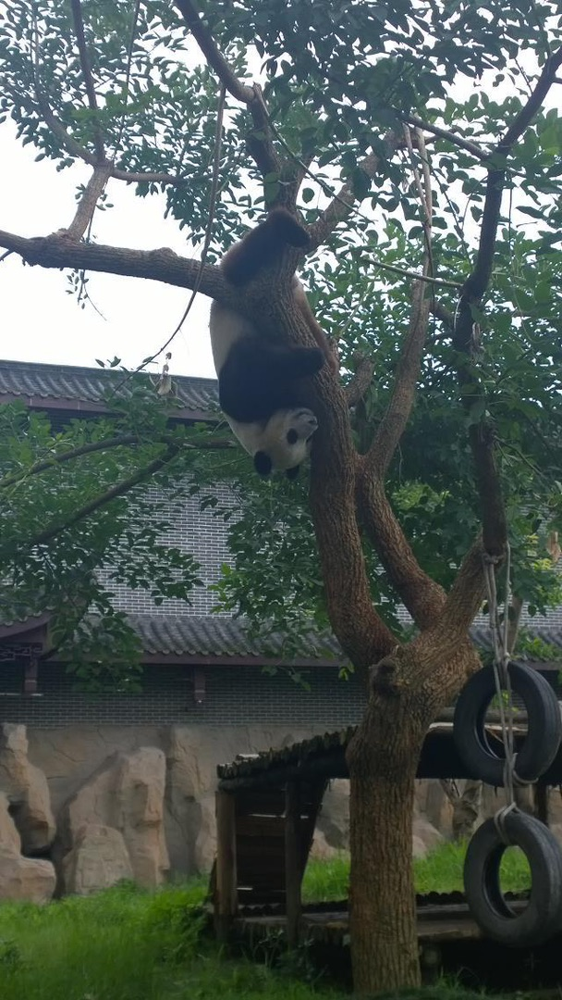
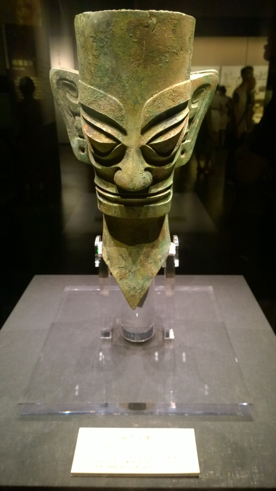
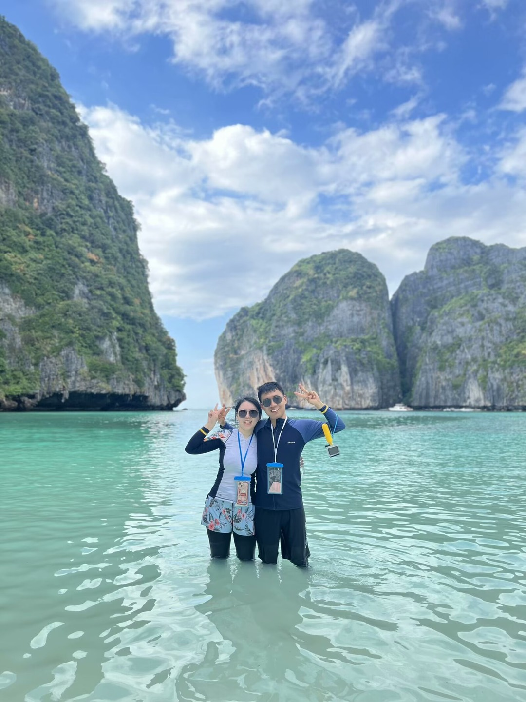
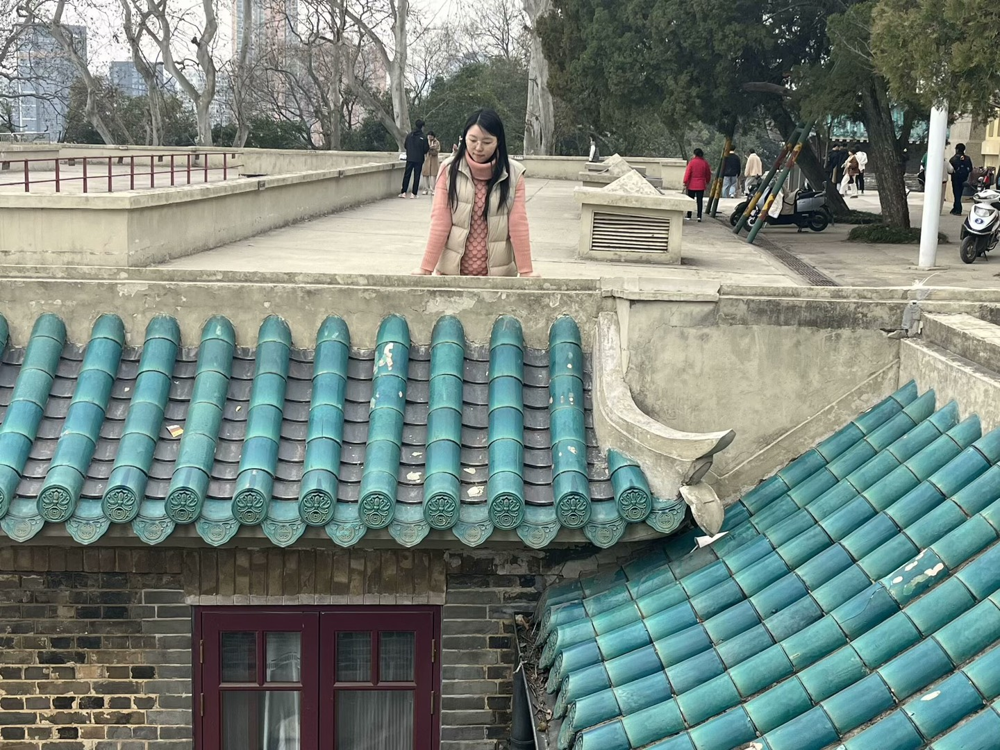
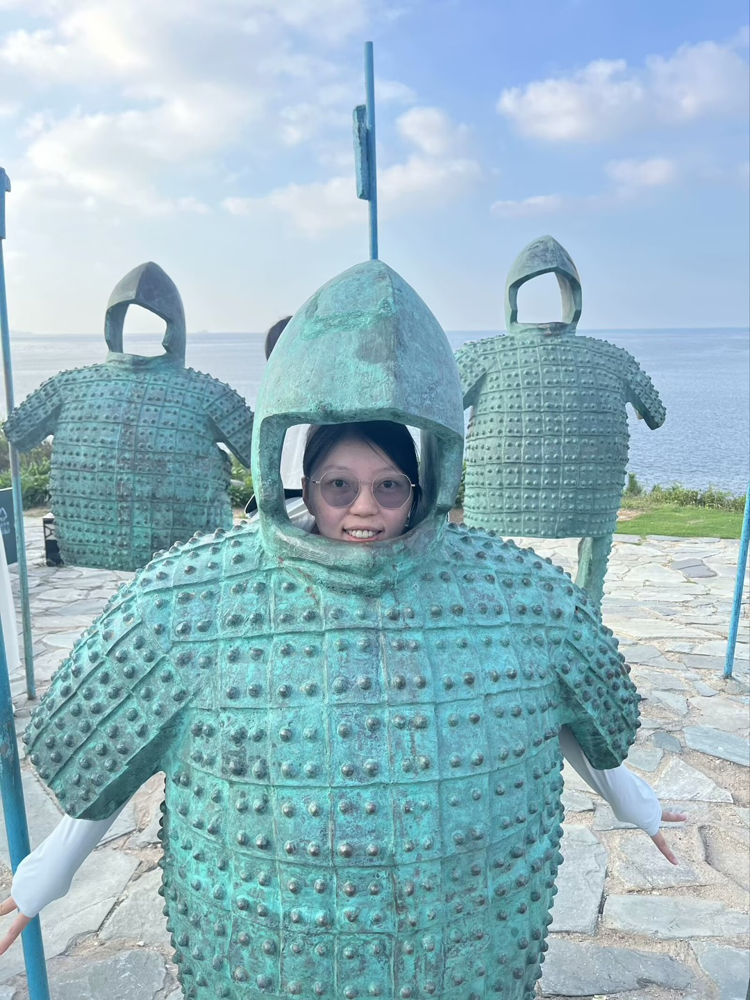
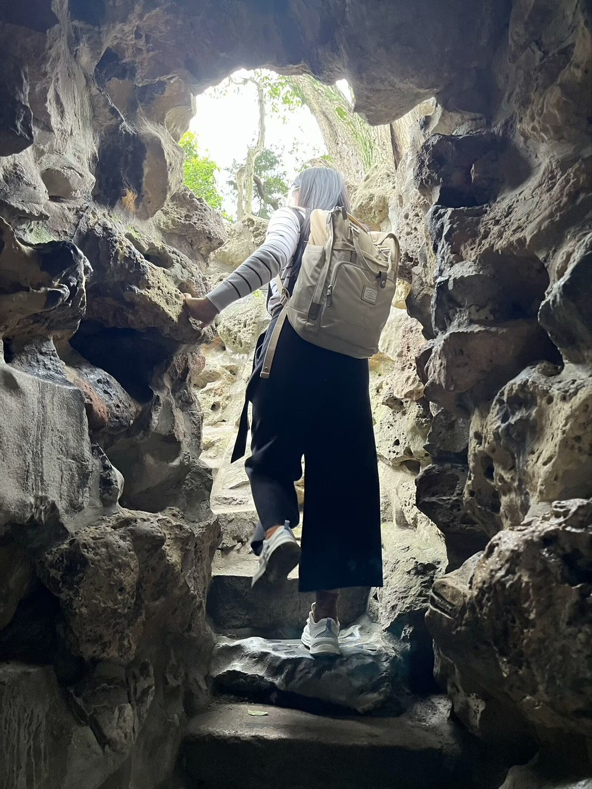

Sichuan
都江堰

大熊猫基地
峨眉山
九寨沟
九寨沟

三星堆
乐山
乐山
青城山
其他地点： 杜甫草堂
、
武侯祠 等
Thailand
大皇宫
郑王庙
水门寺大佛
朱拉隆功大学
伦披尼公园
皮皮岛

玛雅海湾
洛克岛
其他地点： 暹罗区
、
甲米
、
兰塔岛 等
Guangdong
松山湖
滨海大厦窗外
虎门
其他地点： 深圳大鹏所城
、
深圳盐田港
、
佛山顺德 等
Beijing
北京大学
北大冯友兰故居
北大图书馆喵
其他地点： 天安门广场
、
毛主席纪念馆 等
Hong Kong
囍帖街
香港中文大学
其他地点： 维多利亚港
、
尖沙咀
、
黄金大厦 等
Hubei
省实验明远楼

武汉大学
棋盘街
我的故乡，有黄鹤楼、东湖等
Chongqing
弹子石老街
洪崖洞
其他地点： 潼南区
、
朝天门 等
Shandong

烟台养马岛《甲士》
烟台养马岛
青岛天主教堂
青岛海军博物馆
其他地点： 青岛啤酒博物馆
、
青岛三江里
、
日照海滨森林公园 等
Shanghai
陆家嘴三件套
武康路
上海交通大学徐汇校区
其他地点： 外滩
、
东方明珠 等
Zhejiang
湖州莫干山
之江文化中心
绍兴鲁迅故里
绍兴书圣故里
绍兴八字桥
杭州西湖郭庄
杭州植物园
杭州西溪湿地
杭州灵隐寺
其他地点： 杭州西湖各景区
、
杭州青山湖
、
杭州湘湖
、
杭州良渚遗址
、
杭州宋城 等
Jiangsu
苏博

狮子林
盘门
Others
其他地点： 安徽合肥罍街
、
安徽合肥逍遥津
、
长沙火宫殿
、
湖南大学
、
长沙岳麓书院
、
长沙马王堆
、
等